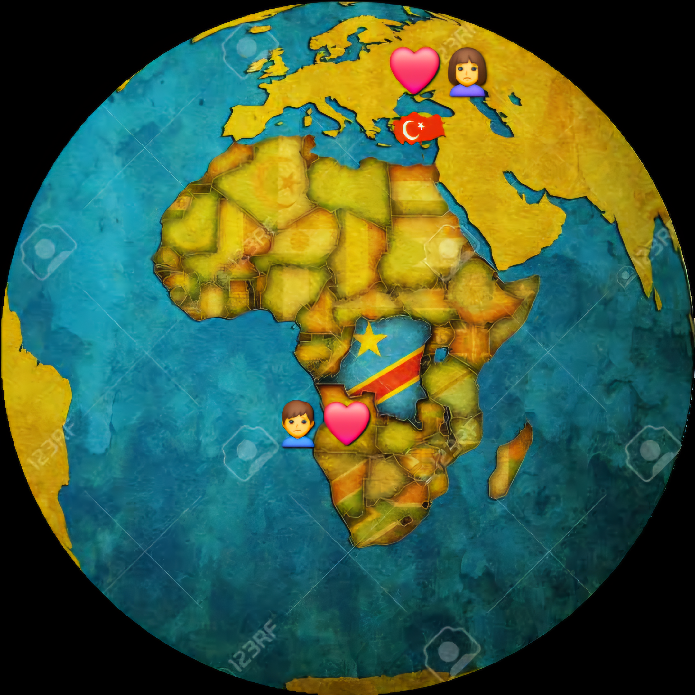

Maceramızı başlatmak için tıklayınız...
Aşkımızın büyüdüğünü görmek için kalbi tıklayın...
Aşkım, Bugün yollarımızın kesiştiği 5 ay, hayatlarımızın iç içe geçtiği 5 ay oldu. Her zaman kolay olmadı, biliyorum. Tartışmalar yaşadık, şüphe anlarından geçtik, güven kayıpları oldu, hatta ayrılık ve engellerin gölgesi üzerimize düştü. Unutulmaz kahkahalarla dolu anlarımız da oldu, bizi daha da yakınlaştıran, hatta bizi şekillendiren gözyaşlarımız da... Ama tüm bunların içinden tek bir şey sarsılmaz kaldı ve her şeyin üstesinden geldi: aşkımız. En karanlık anları atlatmamızı ve güzel anlara daha da sıkı sarılmamızı sağlayan işte bu aşk oldu. Her zorluk, sana karşı hislerimi güçlendirdi ve aramızdaki bağın ne kadar eşsiz, gerçek bir güç olduğunu bana kanıtladı. Teşekkür ederim. Bu inişli çıkışlı 5 aylık maceramız için Allah'a şükrediyorum. Paylaştığımız her an için, en zorları bile olsa, derinden minnettarım; çünkü onlar bizi bugünkü biz yaptı. Biliyorum ki birlikte aşmamız gereken daha çok, çok fazla zorluk var, ama Allah bize yardım etsin ve daha da güçlü olalım. Her şeye rağmen, her şeyden çok, daima sen ve ben dünyaya karşıyız. Seni her şeyden çok seviyorum. 5. ayımız kutlu olsun biricik sevgilim! wait...
